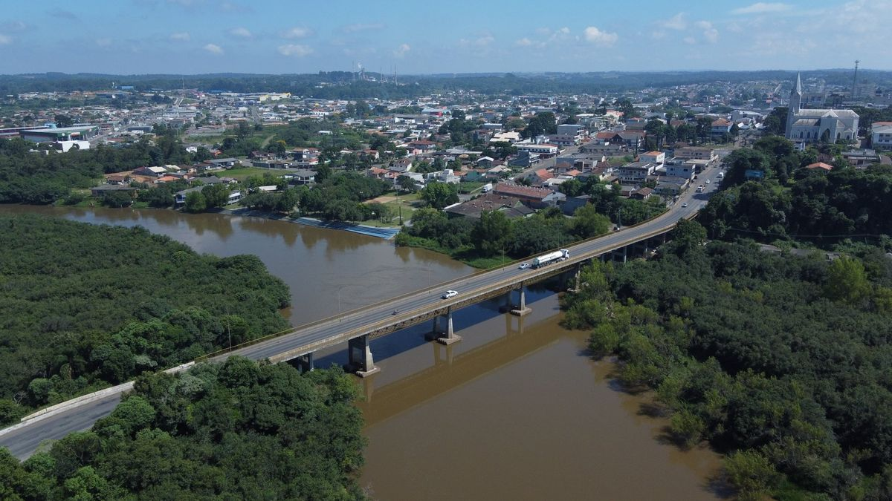
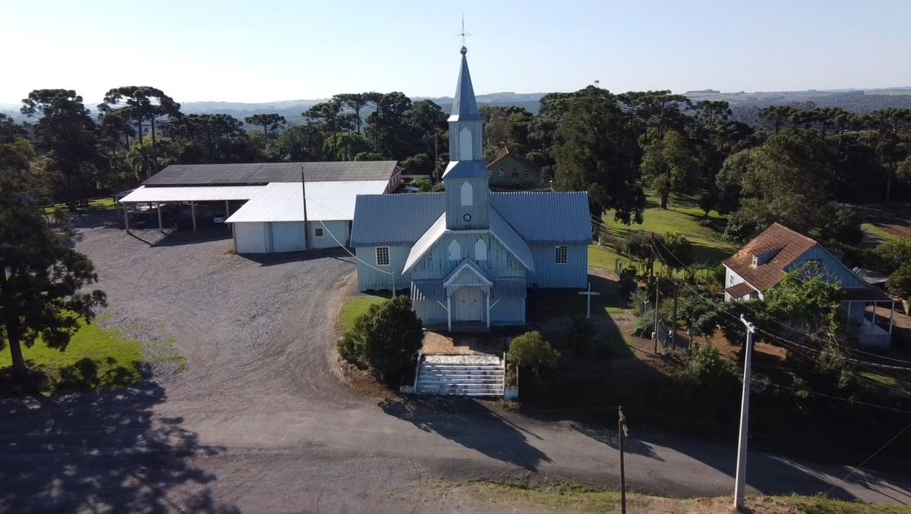
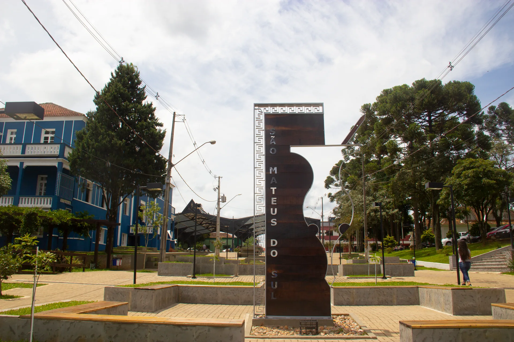
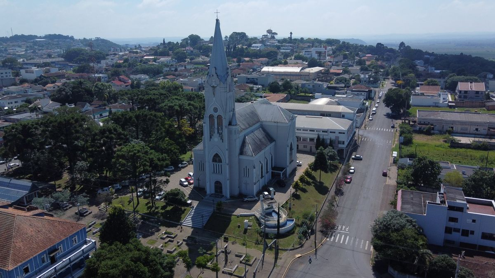
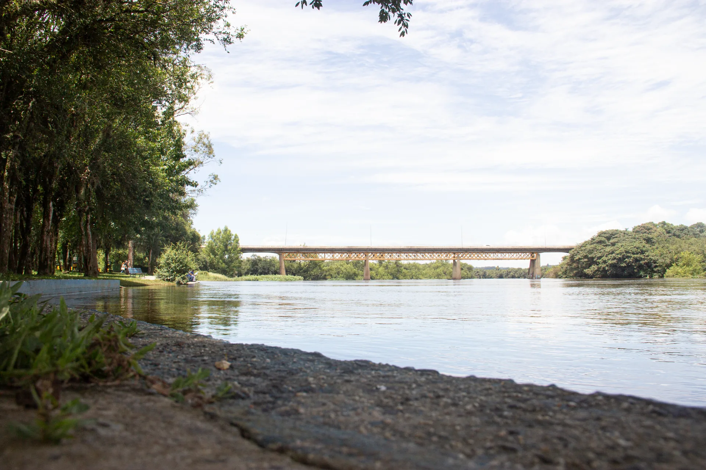
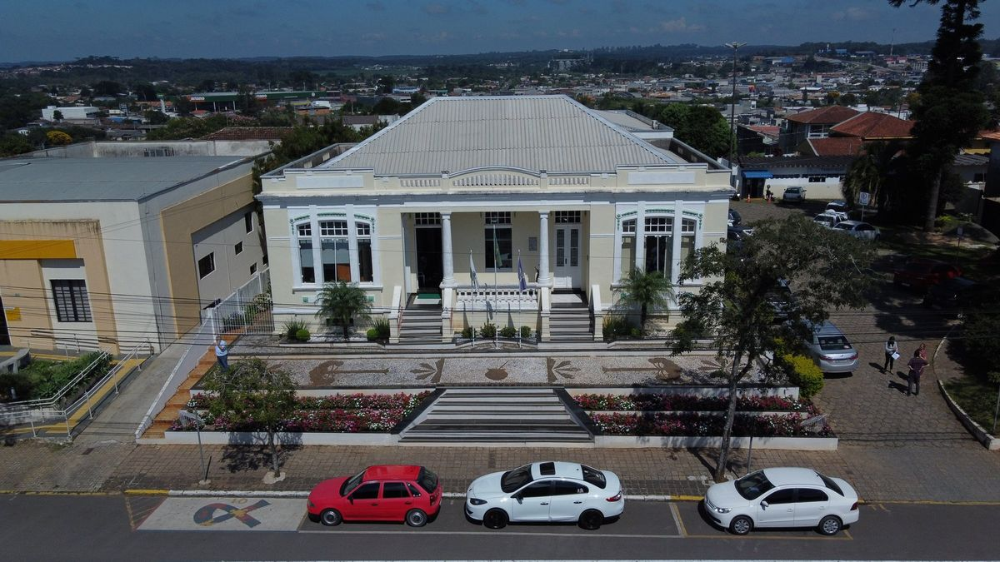
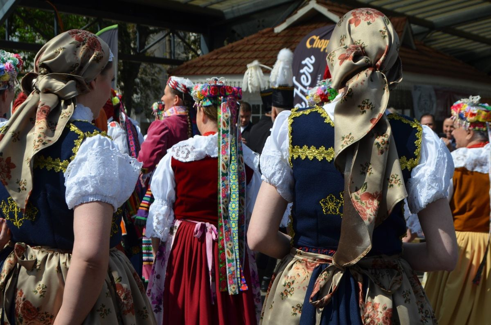
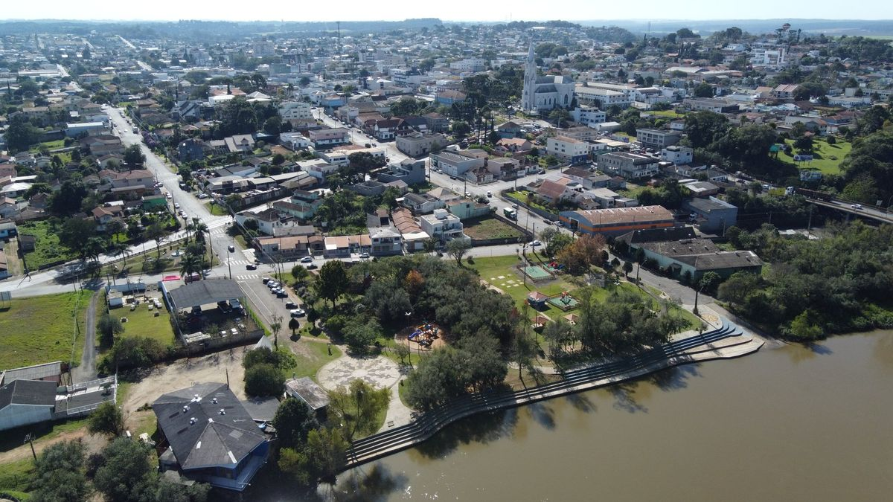
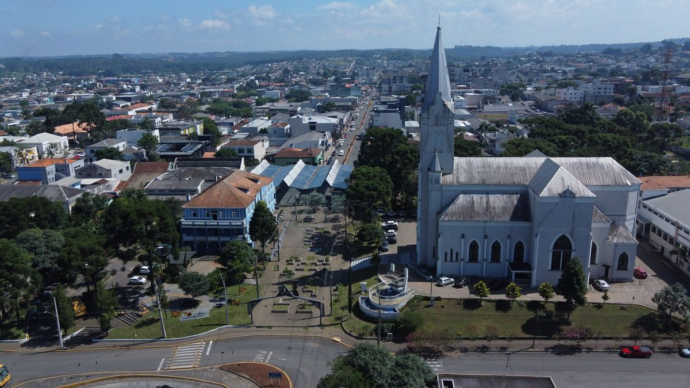

São Mateus do Sul abre inscrições para projetos culturais — Aldir Blanc
Edital contempla até 20 propostas locais. Oportunidade para artistas e produtores culturais do município.
Descubra as rotas turísticas, a cultura polonesa e as belezas naturais da Capital Polonesa do Paraná.
Role para explorar mais
Explore os tesouros da Capital Polonesa do Paraná através de uma experiência única e autêntica
Conheça as duas maiores celebrações de São Mateus do Sul
O maior evento do município! Cinco dias de shows nacionais, feira gastronômica, exposição agropecuária, parque de diversões e o famoso Parque dos Dinossauros.
A magia do Natal na Capital Polonesa! Desfiles temáticos, apresentações culturais, shows, decoração especial e a tradicional chegada do Papai Noel em família.
Banhada pelo lendário Rio Iguaçu, nossa cidade é o encontro harmonioso entre a cultura polonesa centenária, a força da erva-mate nativa e a inovação tecnológica do xisto.
De um simples pouso de tropeiros ao título de Capital Polonesa do Paraná, cada capítulo moldou a cidade única que somos hoje.

Tudo começou às margens do majestoso Rio Iguaçu. Inicialmente um pouso estratégico para tropeiros e tropas militares rumo a Guarapuava, o rio transformou-se na artéria vital da nossa cidade através do ciclo da navegação a vapor.

Somos, por lei estadual, a Capital Polonesa do Paraná. A grande maioria da nossa população descende dos corajosos imigrantes poloneses que cruzaram o Atlântico no século XIX em busca de uma nova vida.

Nossa força econômica vem da terra. Do "Ouro Verde" da erva-mate nativa às reservas de xisto betuminoso, São Mateus do Sul une tradição agrícola com inovação tecnológica de ponta.
Conheça os pontos turísticos que fazem de São Mateus do Sul um destino único

Arquitetura neogótica preservada há mais de século.
Ver mais →
Paisagens de tirar o fôlego e passeios de barco.
Ver mais →

Deck, playground e contemplação da natureza.
Ver mais →
Joia da arquitetura polonesa rural.
Ver mais →

Elegância do início do século XX.
Ver mais →
Capital da erva-mate.
Ver mais →
A culinária de São Mateus do Sul é uma viagem à Polônia através do paladar. Receitas centenárias preservadas por gerações de imigrantes.

A cozinha de São Mateus do Sul é uma viagem ao coração da Polônia. Na mesa dos descendentes você encontra Pierogi (pastéis recheados com batata, queijo ou carne), Gołąbki (repolho recheado ao molho de tomate), pães de fermentação natural, queijos artesanais defumados e maturados, doces e geleias coloniais — e sempre o chimarrão com erva-mate de Indicação Geográfica para fechar.
Fique por dentro das festas tradicionais, eventos culturais e novidades do turismo
Edital contempla até 20 propostas locais. Oportunidade para artistas e produtores culturais do município.

O COMTUR elegeu nova diretoria para o biênio 2026–2028 e traçou metas para o desenvolvimento turístico do município.

A Secretaria de Cultura e Turismo abre chamamento público para artistas interessados em participar de programações culturais.
Festas, feiras e celebrações da Capital Polonesa
Carregando eventos...
Qua e Sex • 17h-22h
Rua do MatheSábados • 7h-12h
Rua do Mathe1º Domingo • 9h
Chimarródromo2ª Terça • 17h-22h
Vila PinheirinhoConforto e hospitalidade polonesa para sua estadia
Hotel tradicional no centro da cidade com quartos confortáveis e café da manhã colonial.
📍 Centro
Acomodações aconchegantes com atendimento familiar e localização privilegiada.
📍 Centro
Hospedagem com charme polonês, restaurante com pratos típicos e ambiente familiar.
📍 Centro
Experiência autêntica em fazendas e propriedades rurais com contato direto com a natureza.
📞 Consulte disponibilidade
📍 Área Rural
Mais de 500 avaliações positivas de turistas que se apaixonaram por São Mateus do Sul
"A cultura polonesa é viva e pulsante! As igrejas são lindas, a comida é maravilhosa e o povo é extremamente acolhedor. A visita à Igreja da Água Branca foi um dos pontos altos da viagem. Voltaremos com certeza!"
"O Rio Iguaçu é simplesmente espetacular! Fizemos um passeio de barco e foi incrível. A combinação de natureza preservada com a história da navegação a vapor torna tudo ainda mais especial. Cidade perfeita para um fim de semana!"
"Experimentamos o autêntico pierogi polonês e foi amor à primeira mordida! Os restaurantes locais são familiares e te fazem sentir em casa. A Rota do Mate também é imperdível - aprendemos muito sobre a cultura do chimarrão."
Estamos prontos para recebê-lo e tornar sua experiência inesquecível.
Chalé da Cultura e Turismo/Produtor
PRAÇA DO RIO IGUAÇU
Rua João Gabriel Martins s/n
CEP: 83900-114
São Mateus do Sul - PR
Atendimento ao Turista
Segunda a Sexta: 8h - 17h
Sábado: 9h - 13h